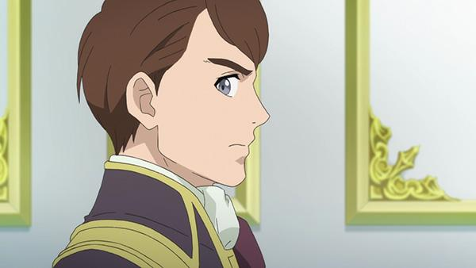
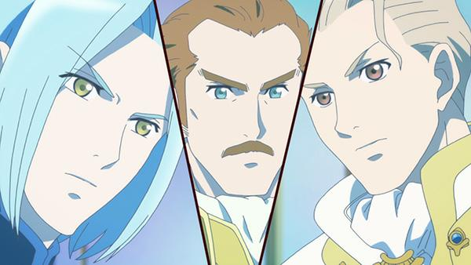
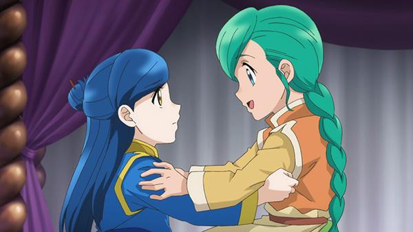
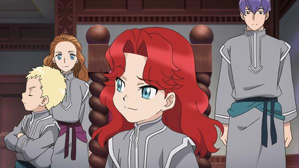
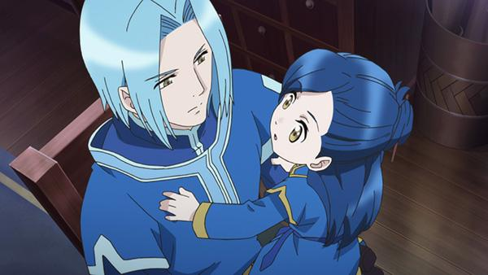

Reseña | Honzuki no Gekokujou 3 – Capítulo 2
Capítulo 2: Estadía invernal y el futuro
Myne se queda desde ahora en la Catedral, con los sirvientes que en cierta manera son sus amigos, solo que con la distancia debida, recibiendo esporádicamente visitas de sus seres queridos (Lutz y Turi). Pero eso no impide la soledad de la niña Myne, quien ahora debe enfrentar ante las adversidades del futuro, del presente y las desgracias de la posesión de tal cantidad de maná. Soluciones hay, mas no quiere alejarse de su familia, por ello se descontrola, aunque logra tener un acuerdo con el Sumo Sacerdote, solo hasta los diez años.
Opinión del capítulo
Un capítulo bueno, sin ser excelente, lo tomo como un desarrollo más a profundidad de los problemas que se plantearon en el anterior capítulo y con los de las temporadas pasadas. Mucho texto para algunos, probablemente sí, nos quieren inculcar la lectura a la fuerza (por medio de los subtítulos). Pero me entretiene, tienen una forma de abordarlo que no llega a fastidiar (muy contrario a lo que me pasó con Log Horizon en su tercera temporada, donde sus diálogos me parecían demasiado pesados). No esperen encontrar acción física, pero sí acción en cuanto a desarrollos de problemas que pueden atrapar.
Por otra parte, creo que debemos llamar al FBI, eso que pasó al final entre el Sumo Sacerdote y Myne me hizo pensar eso. Sé que no hay malas intenciones en ambos personajes, igual me pregunto si no será un fanservice para los lolicones. Sea lo que sea, buen capítulo.
La soledad de Myne
Donde uno no se siente cómodo, simplemente se siente solo. No es que los “sirvientes” le desagraden a Myne, creo que serían amigos ella con ellos, solo que las reglas los alejan. Fran no es un villano, ni un personaje desagradable, solo es alguien que cumple su misión y que sirve de guía ante lo desconocido del mundo noble. A mi criterio es un muy buen personaje, aunque su función entristezca a la ratona.
Ahora imaginen ver un día a la ex paraje que aún siguen amando, solo de lejos. ¿Qué sentirían? Supongo que algo que les dice que deben mantenerla(o) cerca, que no se vaya. Eso es lo que siente Myne, no querer desprenderse de sus seres muy, pero muy queridos, porque ellos fueron los que la hicieron crecer y la apoyaron desinteresadamente. Por eso cuando Turi se va Myne susura un “no te vayas”. No creo que acá se aplique “la costumbre es más fuerte que el amor”, sino un: porque te quiero, te quiero cerca.
Revolución… ¿a la vista?
Algo que me pareció bien gracioso es que Myne se planteó el objetivo de hacer leer y escribir a las personas, por lo cual si hay más personas que saben hacer eso habrán más libros (sumando que se abarataron los precios de producción de los libros, por la misma ratona). Además que estamos en una suerte de “Edad Media” mágica, no resulta raro que se produzcan cambios como los vividos en el mundo con la aparición de la imprenta y eso significa una revolución cultural. Todo eso llevaría, posiblemente, a una ilustración de los no-mágicos, tanto a nivel intelectual como militar (pues los secretos para fabricar artefactos antimágicos se propagaría) y esto podría hacer estallar una Revolución Francesa.
Solo es un campo hipotético, pero posible. El gusto por la lectura de Myne podría provocar, a la larga, miles de muertes. Ahora me pregunto, ¿Gutenberg fue un fanático de la lectura? ¿Este será el isekai y camión-kun ya nos habrá atropellado? Preguntas que no me dejarán dormir.
Problemas del (a) futuro
Al problema de Wolf y del Gremio de la Tinta, del cual Benno tendrá que averiguar más, se suma la maquinación de los nobles. Myne levanta la envidia y el asombro de los nobles, añadiendo que parece que fue favorecida por el Señor Feudal debido a su maná abundante. Ella y los que la rodean están en peligro, siempre y cuando sean plebeyos. Una solución “sencilla”, que Karstedt la adopte y se vuelva una noble, por lo cual la ratona estará más protegida. Solo que esto no es algo que ella quiera. Por el momento solo tiene a Damuel como guardaespaldas. Las cosas se pueden mantener contenidas hasta que Myne cumpla diez años, ahí las cosas cambiarán, eso da a entender el Sumo Sacerdote.
Hay un detalle más, lo que dice sentir Myne, pero creo que esto se entiende muy bien. Ahora tenemos dos problemas para la temporada, aparte de los que ella tiene interiormente. A esperar el desarrollo y, sobre todo, esperar no llamar al FBI.
